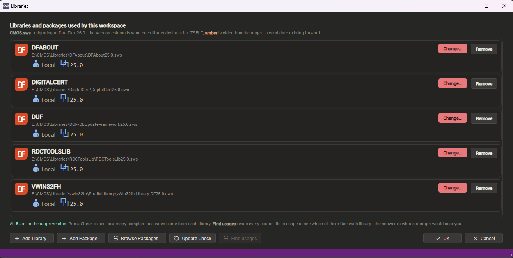

Libraries and Packages
A DataFlex workspace lists the shared libraries it compiles against in its .sws file. The Libraries dialog shows that list as something you can edit, and — on a DataFlex 26 workspace — the packages it depends on as well. Open it from the Libraries tile; see How to use the Program.
Its heading reads Libraries and packages used by this workspace, and one card stands for one entry.

What a card tells you
- Publisher and version — the version is what each library declares for itself. A package pinned to a git commit says commit before the value, so a bare SHA is never mistaken for a release. Amber means older than the target you are migrating to — a candidate to bring forward.
- The path — as the file holds it. Click it to reveal that copy in Explorer; a machine often holds several copies of one library.
- not found — nothing is at that path — the likeliest damage after a workspace has been copied.
- Entries a library declares — tagged, and shown because they are compiled in too.
The line along the foot sums the list up — how many are already on the target version, and what a Check would tell you about each.
Editing the list
- Add Library... — choose the library's .sws. The entry is written relative to this workspace where that resolves, so the reference survives the workspace being copied.
- Change... — swap an entry for another .sws, such as the newer build beside it.
- Remove — on a workspace entry, takes it out of the list and nothing more.
- OK and Cancel — those three edit a list in memory only. OK backs the .sws up and writes the list back; Cancel leaves the file exactly as it is.
- Remove on an entry a library declares is the exception — it is written at once, into that library's own .sws, changing that library for every workspace using it. You are asked first and the answer defaults to No, because Cancel afterwards will not put it back.
- Find usages — counts which source files directly Use each library: what repointing an entry would cost. It reads the whole workspace, so it is not done on opening. A DataFlex 26 workspace has no retargeting — each dependency pins its own version — so there the button is dimmed.
Packages
- Add Package... — one field taking all three forms, described in the dialog under Local, Cloud and Git. Browse... fills in a local path. Copy link puts a whole example on the clipboard, the path inside the repository included — clipping that short is what makes an install fail.
- Browse Packages... — what the package manager offers this workspace, each with its description, publisher and version, and an Install button. Ones already installed are not listed.
- Details — Publisher, Licence, DataFlex (the releases it supports) and Requires, then the description. One declaring no licence says no licence declared rather than leaving a blank.
- Update Check — asks once what newer versions exist and changes nothing. Every card's Update chip stays dead until it has run, and then reads Up to date when there is nothing newer, so "not checked" and "nothing available" never look alike.
- Uninstall — unlike Remove, this happens at once.
DFRefactor downloads nothing itself: df-cli, which ships with DataFlex 26, does the fetching and installing.
An INI workspace must be converted first
Packages live in the DataFlex 26 JSON workspace format, and the older INI format has nowhere to keep one — so Add Package... and Browse Packages... are shown but dimmed. The dialog says so and offers Convert to JSON now, which runs df-cli in the Convert workspace to the DataFlex 26 format window and shows its output as it arrives. The [Libraries] section becomes a dependencies array, and the libraries listed keep working.